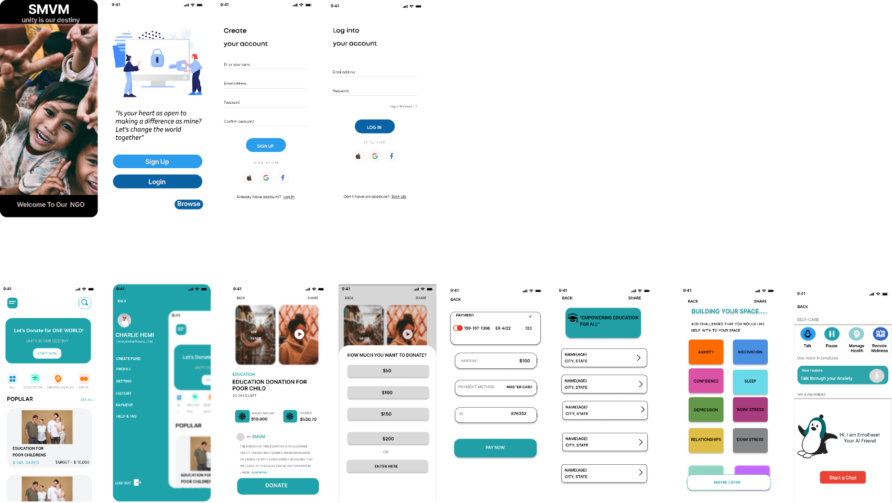
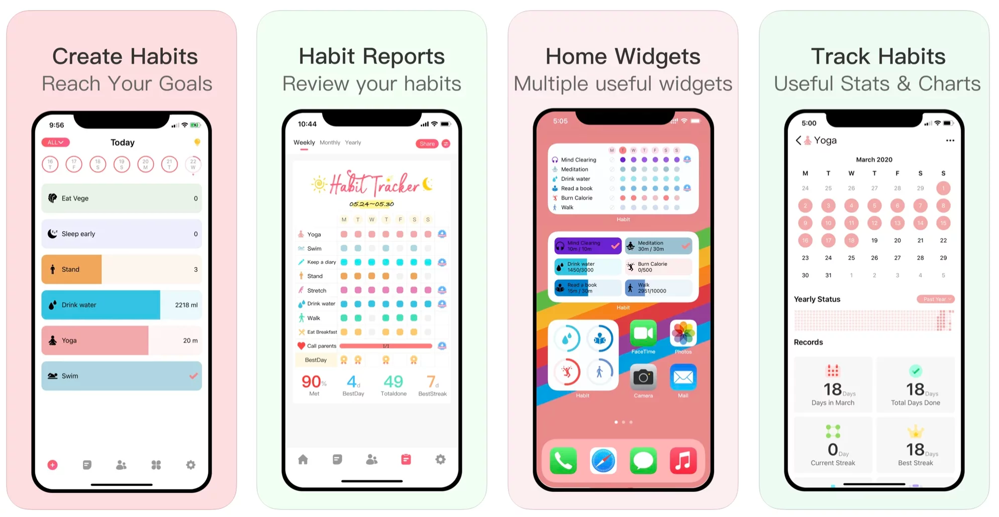

Portofolio Karya Saya
| Karya | Deskripsi | Gambar | Link YouTube |
|---|---|---|---|
| Redesign UI/UX Website Sekolah | Desain ulang tampilan website sekolah agar lebih modern dan mudah digunakan. |  | Lihat Video |
| Aplikasi Habit Tracker | Aplikasi pencatat kebiasaan harian dan progres pengguna. |  | Lihat Video |
- Karya Lain: Desain logo untuk bisnis .
- Karya Lain: Video presentasi proyek kelompok.